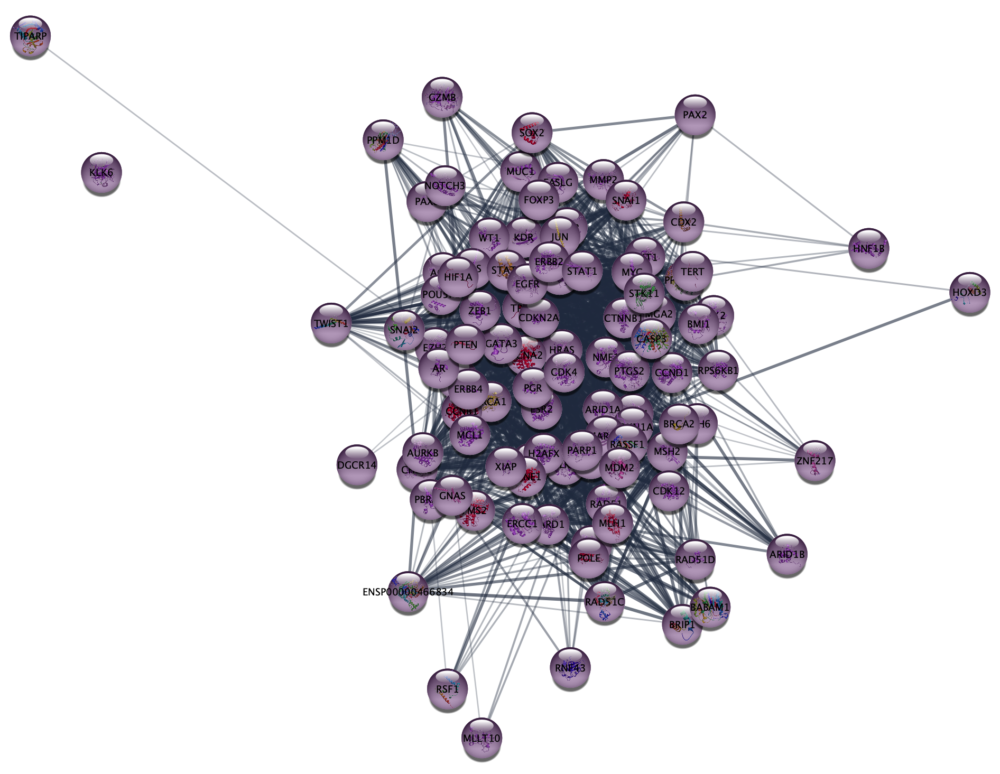
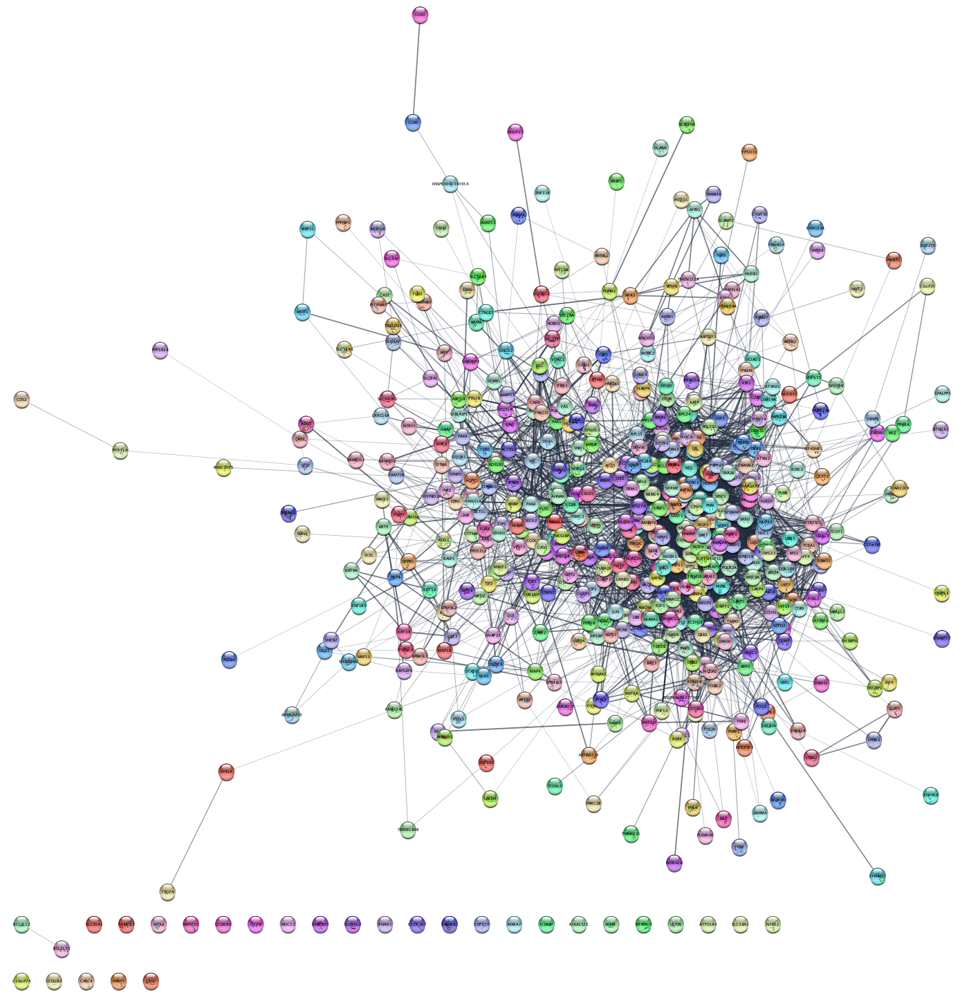
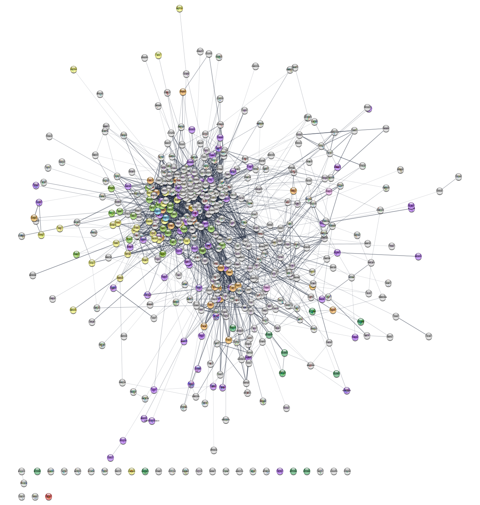

Cytoscape StringApp
In these exercises, we will use the stringApp for Cytoscape to retrieve molecular networks from the STRING and STITCH databases. The exercises will teach you how to:
- retrieve networks for proteins or small-molecule compounds of interest
- retrieve networks for a disease or an arbitrary topics in PubMed
- layout and visually style the resulting networks
- import external data and map them onto a network
- perform enrichment analyses and visualize the results
- merge and compare networks
- select proteins by attributes
- identify functional modules through network clustering
The original version of this tutorial was developed by Lars Juhl Jensen of the Novo Nordisk Center for Protein Research at the University of Copenhagen. We thank professor Jensen for his gracious willingness to allow us to repackage the content for delivery as a Cytoscape tutorial.
Prerequisites
To follow the exercises, make sure that you have the latest version of Cytoscape installed. The exercises also require you to have certain Cytoscape apps installed; stringApp, enhancedGraphics and clusterMaker2, as well as the yFiles layout algorithms.
- Go to
Apps → App Store → Show App Store , and using the search field at the top search for one of the apps, for example stringApp. - The corresponding page at the Cytoscape App Store will open in a browser, click the Install button.
- In the Cytoscape interface, the app should be shown with a check mark in the
App Store in theControl Panel . - Repeat with the other apps: enhancedGraphics, clusterMaker2 and yFiles layout algorithms.
If you are not already familiar with the STRING database, we highly recommend that you go through the short STRING exercises provided by the Jensen lab to learn about the underlying data before working with them in these exercises.
Exercise 1
In this exercise, we will perform some simple queries to retrieve molecular networks based on a protein, a small-molecule compound, a disease, and a topic in PubMed.
1.1 Protein queries
- In the
Network tab of theContol Panel , select STRING protein query in the drop-down and type in a protein name, for example SORCS2. Alternatively, useFile → Import → Network from Public Databases... . - Click the
More Options... button ☰ to view settings. Make sure the appropriate organism is selected (e.g. Homo sapiens). Maximum number of interactors determines how many interaction partners of your protein(s) of interest will be added to the network. The default setting is 10, which we will keep for this example.- Click the 🔍 button to start the search.
Unless the name(s) you entered give unambiguous matches, a
disambiguation dialog will be shown next. It lists all the matches
that the stringApp finds for each query term and selects the first
one for each. Select the right one(s) you meant and continue by
pressing the
How many nodes are in the resulting network? How does this
compare to the maximum number of interactors you specified? What
types of information does the
1.2 Compound queries
- In the
Network tab of theContol Panel , select STITCH compound query in the drop-down and type in your favorite compound, for example imatinib. - You can select the organism and number of additional interactors just like for the protein query above, and the disambiguation dialog also works the same way.
- Click the 🔍 button to start the search.
How is this network different from the protein-only network
with respect to node types and the information provided in the
1.3 Disease queries
- In the
Network tab of theContol Panel , select STRING disease query in the drop-down and type in a disease of interest, for example Alzheimer’s disease. The stringApp will retrieve a STRING network for the top-N proteins (by default 100) associated with the disease. - Click the 🔍 button to start the search.
- The next dialog shows all the matches that the stringApp finds for your disease query and selects the first one. Make sure to select the intended disease before pressing the
Import button to continue.
Which additional attribute column do you get in the
1.4 PubMed queries
- In the
Network tab of theContol Panel , select STRING PubMed query in the drop-down and type in type a query representing a topic or interest, for example jet-lag. You can use any query that would work on the PubMed website, but it should obviously a topic with related genes or proteins. The stringApp will query PubMed for the abstracts, find the top-N proteins (by default 100) associated with these abstracts, and retrieve a STRING network for them. - Click the 🔍 button to start the search.
Which attribute column do you get in the
Exercise 2
In this exercise, we are going to use the stringApp to query the DISEASES database for proteins associated with epithelial ovarian cancer (EOC), retrieve a STRING network for them, and explore the resulting network.
2.1 Disease network retrieval
- Close the current session in Cytoscape from the menu
File → Close Session . - In the
Network tab of theContol Panel , select STRING disease query in the drop-down and type in ovary epithelial cancer. - Set the
Maximum number of proteins option to 250. - Click the 🔍 button to start the search.
- Once the network appears, go to the menu
View → Always Show Graphics Details to see the individual nodes and edges.
2.2 Work with node attributes
Note that the retrieved network contains a lot of additional
information associated with the nodes and edges, such as the protein
sequence, tissue expression data, subcellular localization, disease score
(
- Find the
disease score column in the node attributes table (look at the last columns). Sort it by values to see the highest and lowest disease scores. - Highlight the corresponding nodes by selecting rows in the table, bringing up the context menu (right-click
the selected rows) and choosing the
Select nodes from selected rows option. Use one of the icons in the menu to zoom into the selected node.
Give an example for a node with the highest and lowest disease score.
2.3 Inspect subcellular localization data
The stringApp automatically retrieves information about in which compartments the proteins are located from the COMPARTMENTS database, which we will take a look at first to better understand the data.
- Go to COMPARTMENTS and enter ARID1A into the search box. The resulting page will show all matches for the query ARID1A.
- After selecting the human gene, you will see a schematic of where in the cell it is located and below it tables containing the specific lines of evidence that contribute to the overall score.
What compartments is ARID1A present in with a confidence of 5? What source do these interactions come from? Hint: you can see what the abbreviations for different evidence types mean here.
2.4 Continuous color mapping
Cytoscape allows you to map attributes of the nodes and edges to visual properties such as node color and edge width. Here, we will map the subcellular localization data for nucleus to the node color.
- From the
Control Panel , selectStyle . Click on the◀ button to the right of the property you want to change, in this caseFill Color and setColumn to the node column containing the data that you want to use (nucleus ). - Since this is a numeric value, we will use the
Continuous Mapping as theMapping Type , and set a color gradient for how likely each protein is located in the nucleus. The default Cytoscape yellow–purple color gradient already gives a nice visualization of the confidence of being located in this compartment.
Many proteins are strongly associated with the nucleus – they will be purple.
2.5 Select proteins located in the nucleus
Because many proteins are located in the nucleus, we will identify the
proteins with highest confidence of 5. One way to do this is to use the
COMPARTMENTS sliders in the
- Go to the
Node tab and expand the group ofCompartment filters by clicking the small triangle. - To hide all nodes with a compartments score below 5, find the slider for
nucleus and set the low bound to 5 by entering the number.
How many proteins are found in the nucleus with a confidence of 5? And in mitochondrion? Hint: You can see the number of hidden nodes in the light grey panel bar on the bottom-right part of the network view panel, just above the Table panel.
Important: Move the filter back to 0 before continuing with the next exercise.
Exercise 3
In this exercise, we will work with a list of 541 proteins associated with epithelial ovarian cancer (EOC) as identified by phosphoproteomics in the study by Francavilla et al.. An adapted, simplified version of their results table can be downloaded here. Download the file, and open it in Excel or a similar tool.
3.1 Protein network retrieval
- In the
Network tab of theContol Panel , select STRING protein query in the drop-down and paste the list of UniProt accession numbers from the UniProt column in the table. - Leave the default value for
Maximum number of interactor . - The disambiguation dialog shows all STRING proteins that cannot be matched to the query terms uniquely, with the first protein for each query term automatically selected. This default is fine for this exercise
- Click the 🔍 button to start the search.
- Once the network appears, go to the menu
View → Always Show Graphics Details to see the individual nodes and edges.
How many nodes and edges are there in the resulting network? Do the proteins all form a connected network? Why?
Cytoscape provides several visualization options under the
Can you find a layout that allows you to easily recognize patterns in the network? What about the Edge-weighted Spring Embedded Layout with the attribute ‘score’, which is the combined STRING interaction score?
3.2 Discrete color mapping
Cytoscape allows you to map attributes of the nodes
and edges to visual properties such as node color and edge
width. Here, we will map drug target family data from the Pharos database to the node
color. This data is contained in the node attribute called
- Select
Style from theControl Panel . - Click the
◀ button to the right of the property you want to change, in this caseNode Fill Color , and changeColumn from name to family, which is the node column containing the data that you want to use.
This action will remove the rainbow coloring of the nodes and present you with a list of all the different values of the attributes that exist in the network.
Which target families are present in the network?
- To color the corresponding proteins, first click the field
to the right of an attribute value, i.e.
GPCR orKinase , then click the ⋯ button and choose a color from the color selection dialog. - You can also set a default color, e.g. for all nodes that do not have a target family annotation from Pharos, by clicking on the grey button in the first column of the same row.
How many of the proteins in the network are ion channels or GPCRs?
There are many kinases in the network. We can avoid counting them manually by creating a selection filter.
- Click on the
Filter tab in theControl Panel . - Click the
ᐩ button and chooseColumn filter from the drop-down menu. Then, find and select the attributeNode: family . Writekinase in the text field to select all nodes with this annotation.
How many kinases are in the network?
3.3 Data import
Network nodes and edges can have additional information associated with them that we can load into Cytoscape and use for visualization. We will import the data from the text file.
- To import the node attributes file into Cytoscape, go to
File → Import → Table from File . The preview in the import dialog will show how the file is interpreted given the current settings and will update automatically when you change them. - To change the default selection, click the arrow in the column heading. For example,
you can decide whether the column is imported or not by changing the
Meaning of the column (hover over each symbol with the mouse to see what they mean). This column-specific dialog will also allow you to change the column name and type.
Now you need to map unique identifiers between the entries in the data
and the nodes in the network. The key point of this is to identify which
nodes in the network are equivalent to which entries in the table. This
enables mapping of data values into visual properties like Fill Color
and Shape. This kind of mapping is typically done by comparing the unique
identifier attribute value for each node (
The
- In this case, we will use
query term because this attribute contains the UniProt accession numbers you entered when retrieving the network. - You can also change the
Key by pressing the key button for the column that is to be used as key for mapping values in the dataset. In this case it is the first column in the table called UniProt, from where you copied the identifiers. - Click
OK to import the data.
If there is a match between the value of a
3.4 Continuous color mapping
Now, we want to color the nodes according to the quantitative phosphorylation data (log ratio) between disease and healthy tissues for the most significant site for each protein.
- From the
Control Panel , selectStyle . Then click on the◀ button to the right of the property you want to change, for exampleNode Fill Color . - Next, set
Column to the node column containing the data that you want to use (EOC vs EOS&FTE). - Since this is a numeric value, we will use the
Continuous Mapping as theMapping Type , and set a color gradient for how abundant each protein is. The default Cytoscape color gradient blue–white–red already gives a nice visualization of the log ratio.
Are the up-regulated nodes grouped together? Do you see any issues with the color gradient?
- To change the colors, double-click on the color gradient in order to
bring up the
Continuous Mapping Editor window and edit the colors for the continuous mapping. - In the mapping editor dialog, the color that will be used for the minimum value is on the left, and the maximum is on the right. Double-click on the triangles on the top and sides of the gradient to change the colors.
- The triangles on the top represent the values at which the data will be clipped; anything above the right triangle will be set to the max value. This is useful if you have a small number of values that are significantly higher than the median. As you move the triangles and change the color, the display in the network pane will automatically update – this is all easier to do than to explain!
- If at any point it does not seem to work as expected, it is easiest to just delete the mapping and start again.
Can you improve the color mapping such that it is easier to see which nodes have a log ratio below -4 and above 4?
3.5 Network clustering
Next, we will use the MCL algorithm to identify clusters of
tightly connected proteins within the network. Go to the menu
How many clusters have at least 10 nodes?
We will work with the largest cluster in the network (it should be
in the upper left corner). Select the nodes of this cluster by holding
down the modifier key (Shift on Windows, Ctrl or Command on Mac) and
then left-clicking and dragging to select multiple nodes. Then, create
a new network by clicking on the
How many nodes and edges are there in this cluster?
3.6 Functional enrichment and enriched publications
Next, we will retrieve functional enrichment for the proteins in our network of the largest cluster.
After making sure that no nodes are selected in the network, go
to the menu
Which are the four most statistically significant terms? Do the Uniprot and GO Process terms agree with each other, i.e., annotate the same set of nodes?
Next, we will visualize the top-5 enriched terms in the network using
split charts, click the colorful chart icon to show the terms as the
charts on the network. You can manually change the layout of the network
to improve the visualization. First apply the
To retrieve a list of publications that are enriched for the proteins
in the network, go to the menu
What is the title of the most recent publication?
To save the list of enriched terms and associated p-values as a text
file, go to
3.7 Overlap networks
Cytoscape provides functionality to merge two or more networks,
building either their union, intersection or difference. We will now
merge the EOC network we have from the DISEASES query with the one we
have from the data, so that we can identify the overlap between them. Use
the Merge tool (
How many nodes are in the intersection?
3.8 Integrate networks
Now we will make the union of the intersection network, which
contains the disease scores, and the experimental network. Use the
Now, we can change the visualization of the merged network to be
able to identify high disease score proteins. Specifically, we will
change the size of the nodes in function of their disease score. Select
Exercise 4
In this exercise, we will retrieve virus-host networks for two closely related viruses, merge them into a single network, and then will retrieve the functional enrichment for the host proteins in this network.
4.1 Virus queries
Go to the menu
How many virus proteins are encoded for by this virus? What node information is imported along with the names of the proteins?
4.2 Expand with host interactors
To retrieve interactions with host proteins, go to
The resulting network will be automatically re-styled such that the nodes representing virus proteins are red and host proteins are green-blue. These attributes can be changed from the Cytoscape Style menu.
Which human protein has the highest interaction score to one of the virus proteins? What cellular functions is this protein involved in? (Hint: check the STRING results panel.)
Additional viruses or hosts can be added to the network by iterating on this procedure, but this will only add proteins that interact with the proteins that are already in the network. This will work fine when adding new hosts, since all virus proteins are already in the network. However to add new viruses, we recommend merging the expanded networks for each virus.
4.3 Add specific host proteins
If a specific host protein is desired, it can also be included in
the network from the
Which HPV proteins does p53 interact with?
Note that p53 will be added to the network in the previous step if more proteins are imported or the selectivity is set to a lower value. Choosing a lower selectivity will include more hub proteins (such as p53) that are connected to many proteins, and that do not interact specifically with proteins in your network. Conversely, choosing a higher selectivity will include more proteins that are more specific to your network, but these interactions will have lower confidence (since any higher confidence hub proteins will be filtered out). Further, be aware that changing the selectivity parameter will change the enrichment results in step 4.5, since different proteins will be included in the host network.
4.4 Merge two host-virus networks
Let us now compare the networks for HPV 16 and HPV 1a. Create a new
host-virus network for “Human papillomavirus type 1a (HPV 1a)” by
repeating steps 4.1 and 4.2. Merge the two networks using
The resulting network can be styled to give the nodes of each species a distinct color so that the proteins of the two viruses can be distinguished from each other.
How many host proteins interact with E6 from both HPV species?
4.5 Functional enrichment
We will now examine the human proteins to see what pathways are enriched in this network.
Next, we will retrieve functional enrichment for the human proteins. Go
to the menu
Which two KEGG pathways have the lowest p-values? Which host proteins are associated with the KEGG pathways “cell cycle”? (Hint: click on the associated row in the enrichment table to select the proteins with this term.)
Supporting literature
Doncheva NT, Morris JH, Gorodkin J and Jensen LJ (2018). Cytoscape stringApp: Network analysis and visualization of proteomics data.
Preprint